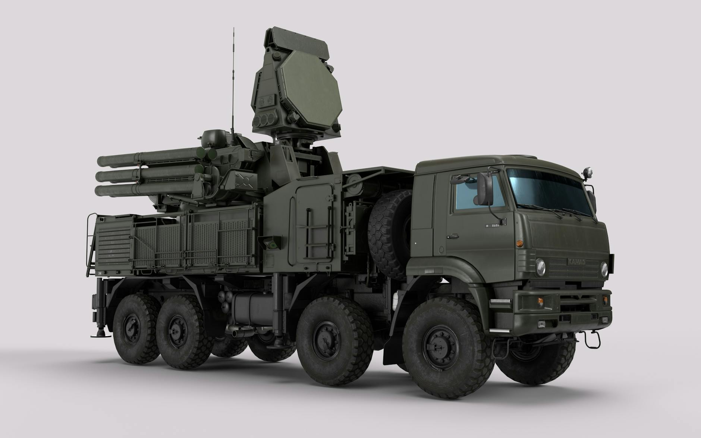
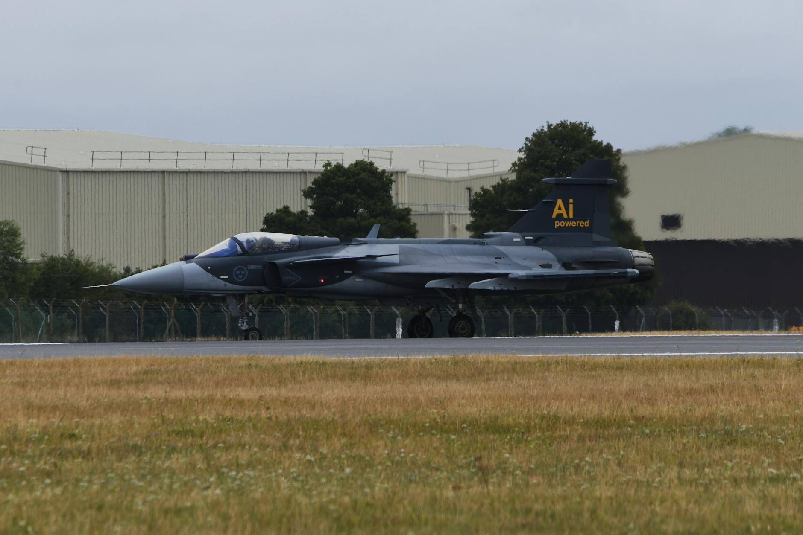
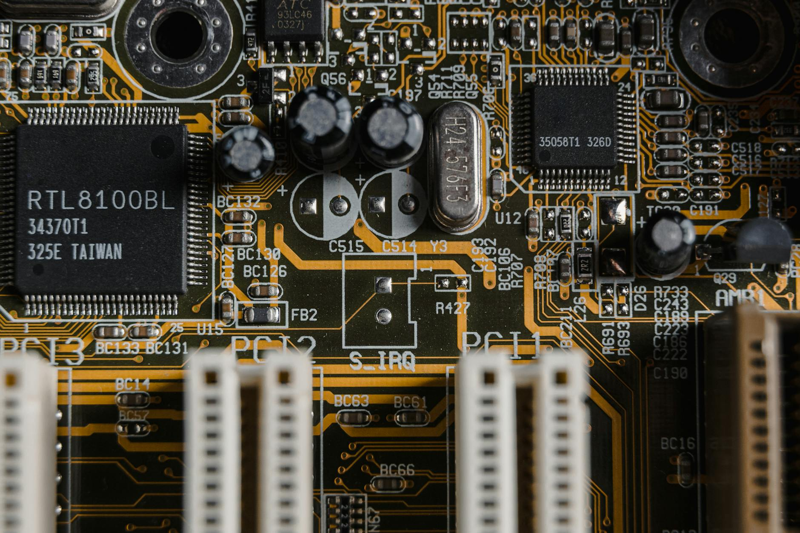
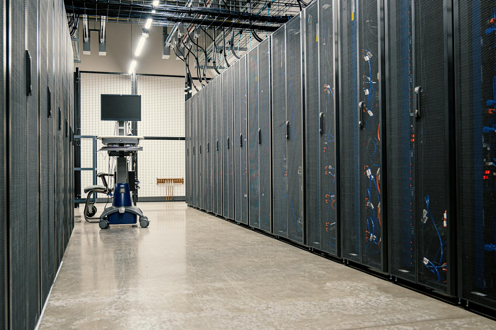
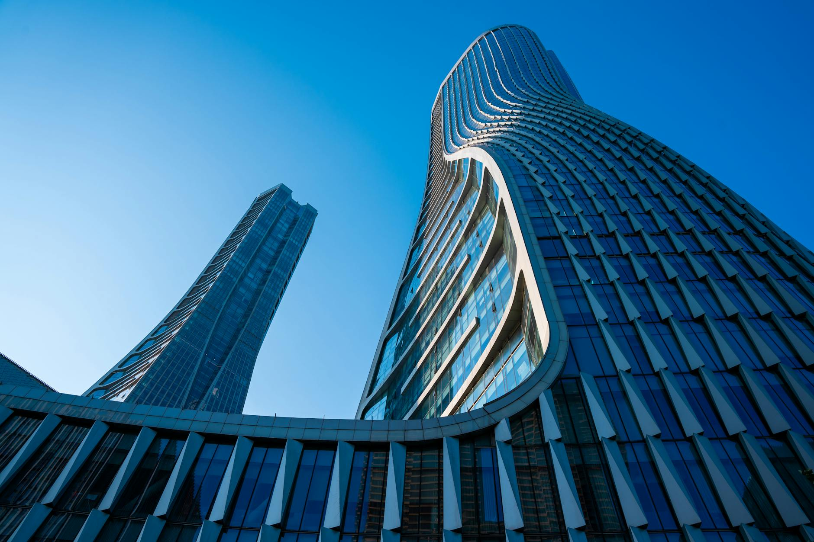
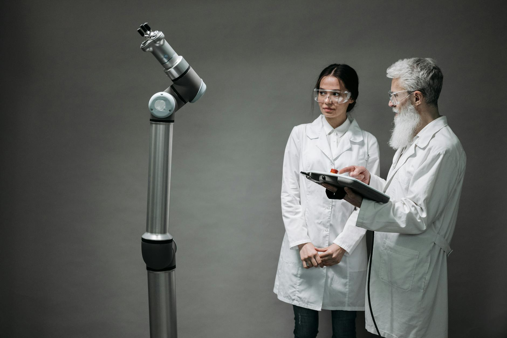

AI DAILY
AI 行业日报
2026年3月19日 · 精选 10 条
01技术突破
Mamba 3 开源：首次超越 Transformer，语言建模提升近 4%

Carnegie Mellon 的 Albert Gu 和 Princeton 的 Tri Dao 联合发布 Mamba-3，采用 Apache 2.0 开源协议。这是一种状态空间模型（SSM），相比 Transformer 的二次计算复杂度，通过维护紧凑内部状态实现更高效的推理。
核心设计从训练效率转向「推理优先」，解决 GPU 解码时的空闲等待问题。语言建模 perplexity 提升近 4%，推理延迟显著降低。此前 Mamba 架构已被 Nvidia Nemotron 3 Super 等混合模型采用。
INSIGHT
Transformer 统治了 AI 基础架构八年，Mamba 3 是第一个在语言建模上正面超越它的开源替代方案。关键不在 4% 的精度提升，而在推理效率——当 Token 生成成本成为 AI 公司的最大支出项，「推理优先」的架构可能重新定义算力经济学。
02政策监管
美国司法部：Anthropic 不可信任军事系统，Claude 军用限制引发法律战

美国司法部提交法庭文件，辩称将 Anthropic 列为供应链风险并未违法。国防部长 Pete Hegseth 认定 Anthropic 员工可能「破坏或颠覆国家安全系统」。
Anthropic 主张其 Claude 模型不应用于大规模监控，且目前不够可靠以驱动完全自主武器。若「供应链风险」标签成立，Anthropic 今年可能损失数十亿美元预期收入。旧金山联邦法院将于下周二举行听证。
INSIGHT
这是 AI 公司第一次因为拒绝军事用途被政府反向制裁。Anthropic 面临一个两难：配合军方就违背安全承诺，拒绝就丢掉数十亿政府合同。对整个行业来说，「AI 安全」和「国家安全」之间的边界，正在被法庭重新划定。
03政策监管
五角大楼计划让 AI 公司用机密数据训练模型

五角大楼正计划建立安全环境，让 AI 公司用机密数据训练军事专用模型。目前 Claude 等模型已在机密环境中用于问答（包括分析伊朗目标），但从未在机密数据上做过训练。
五角大楼已与 OpenAI 和马斯克的 xAI 达成协议在机密环境中运行模型。训练将在经认证的安全数据中心进行，国防部保留数据所有权。核心风险：监控报告、战场评估等情报可能嵌入模型本身。
INSIGHT
「用机密数据训练」和「在机密环境中问答」是两码事。前者意味着情报会嵌入模型权重，无法简单删除。一旦模型被泄露或逆向工程，后果远超传统数据泄露——这是 AI 军事化的一个全新风险维度。
04行业动态
三星 6.6 万工会成员 93% 投票赞成罢工，全球芯片供应链恐受冲击

超过 6.6 万名三星电子工会成员参与投票，93.1% 赞成罢工。若无重大转折，工会将于 5 月 21 日至 6 月 7 日全面罢工。
三星是全球最大存储芯片制造商之一。当前全球 AI 数据中心建设持续升温，HBM 等高端存储需求激增，一旦罢工可能加剧芯片供应紧张，波及汽车、手机等多个行业。
INSIGHT
93% 的赞成率说明矛盾已经不是谈判能轻松化解的。偏偏赶上 AI 算力军备竞赛最热的时候——HBM 芯片供不应求，三星的产能哪怕停两周，下游的连锁反应可能持续数月。英伟达和 AMD 的显卡交付节奏都要跟着紧张。
05产品发布
Mistral AI 发布 Forge 企业训练平台，正面挑战云巨头

法国 AI 公司 Mistral 发布 Forge 企业模型训练平台，支持完整训练生命周期：预训练、监督微调、DPO/ODPO 后训练及强化学习。定位直接挑战 AWS、Azure、GCP 等超大规模云服务商。
产品负责人 Elisa Salamanca 表示：微调 API 只能做到 PoC 水平，真正追求目标性能需要更高级的训练工具。同周 Mistral 还发布了 Mistral Small 4 模型和开源代码代理 Leanstral。
INSIGHT
Mistral 的策略很清晰：不跟 OpenAI 比模型大小，而是把自己的训练方法论产品化卖给企业。这和 AWS 当年把内部基础设施开放给外部客户的逻辑类似——如果企业真的需要「自己的模型」，Forge 提供的是从零到一的全套工具链。
06产品发布
阿里成立 Token 事业群，钉钉「悟空」Agent 平台上线

阿里正式成立 Alibaba Token Hub（ATH）事业群，地位与淘天、阿里云并列。钉钉推出 AI 原生工作平台「悟空」，完成全面 CLI 化改造，让 Agent 原生操作钉钉上千项能力。
悟空继承企业权限体系，所有操作在沙箱中运行、留痕可查。规划将淘宝、1688、支付宝等 B 端能力以 Skill 形式接入，目标打造「全球最大 toB Skill 市场」。首批上线 10 个行业解决方案，覆盖 2000 万企业用户。
INSIGHT
「Token 事业群」这个命名很有意思——阿里把 AI 的基本计量单位提升到了集团战略层级。核心逻辑是：谁掌控 Token 的生产和流通，谁就掌控 AI 时代的「水电煤」。悟空瞄准的是让 Agent 替代人类操作企业软件，2000 万家企业就是它的试验田。
07行业动态
「日本最强 AI」塌房：扒开代码全是 DeepSeek
日本乐天在政府 GENIAC 项目资助下发布号称「日本最大最强」的 7000 亿参数模型 Rakuten AI 3.0。开源社区迅速扒出底层架构是 DeepSeek-V3（671B 总参数，激活 37B），乐天仅做了日文数据微调。
乐天在新闻稿中未提及 DeepSeek，还删除了原始 MIT 开源协议文件，被曝光后才补回。日经新闻此前报道：日本公司开发的前十大模型中有 6 个基于 DeepSeek 或 Qwen 二次开发。
INSIGHT
拿政府补贴微调开源模型不丢人，但删掉原始协议、隐瞒来源就是另一回事了。更值得关注的是日经新闻的那个数据：日本前十大模型有六个基于中国开源模型——这说明在基础模型层面，中国开源生态正在成为全球的「供应商」。
08技术突破
Kimi 论文获马斯克点赞：撬动 Transformer「祖传地基」

月之暗面（Kimi）发布技术报告《Attention Residuals》，对残差连接结构进行改造。核心创新：将注意力机制从序列方向旋转到网络深度方向，让每层动态聚合前序层信息。
实验证明同等算力下效果相当于基线模型 1.25 倍算力才能达到的水平，等效节省 20% 算力。马斯克评价「Impressive work from Kimi」；OpenAI o1 发明者 Jerry Tworek 称其为「深度学习 2.0」的开端。
INSIGHT
残差连接是 2015 年 ResNet 提出的老结构，几乎所有深度模型都在用。Kimi 这篇论文动的是「祖传地基」——用一个优雅的旋转操作省下 20% 算力。Jerry Tworek 的「深度学习 2.0」评价虽然夸张，但方向对了：基础架构的小改动，在规模化后效果巨大。
09行业动态
Meta 关停 Horizon Worlds VR 社交：元宇宙旗舰产品走向终结
Meta 宣布关停 Quest VR 头显上的 Horizon Worlds：3 月 31 日从 Quest 商店下架，6 月 15 日 VR 版彻底关闭，仅保留移动端。此前 2 月 Meta 已裁减 Reality Labs 部门 10% 员工。
Horizon Worlds 是 Meta 元宇宙战略的核心产品。Meta 曾因此从 Facebook 更名，投入数十亿美元。Forrester 分析师评价：Meta 试图解决一个不存在的消费者问题，无法在依赖大多数人不拥有的硬件上建立大众社交平台。
INSIGHT
扎克伯格把公司改名 Meta 是 2021 年的事，不到五年，那个「元宇宙」的旗舰产品就要关了。数十亿美元换来一个教训：硬件渗透率不够的时候，社交平台做不起来。现在 Meta 把赌注全压在 AI 上——同样的公司，同样的全押，只是方向换了。
10技术突破
英伟达 B200 算力浪费 60%，FlashAttention-4 将利用率提升至 71%

普林斯顿团队指出英伟达 Blackwell B200 GPU 因软硬件适配问题浪费 60% 计算资源。根本原因：Tensor Core 算力翻倍（2.25 PFLOPS），但指数运算单元和共享内存带宽未同步提升。
FlashAttention-4 由 Tri Dao 领衔，联合 Meta、Together AI、英伟达共同研发，将利用率从 20%-30% 提升至 71%。全部代码基于 Python CuTe-DSL 编写（零 C++），比英伟达官方 cuDNN 9.13 快 1.1-1.3 倍。
INSIGHT
一块 B200 卖几万美金，结果 60% 的算力在空转。FlashAttention-4 的贡献相当于：不用多买 GPU，只靠软件优化就把有效算力翻了一倍多。更有意思的是全部用 Python 写的——连英伟达自己的 CUDA C++ 实现都被超了，说明高性能计算的门槛正在被 AI 时代的工具链拉低。
由 Zayen知览 整理 · 构建者视角